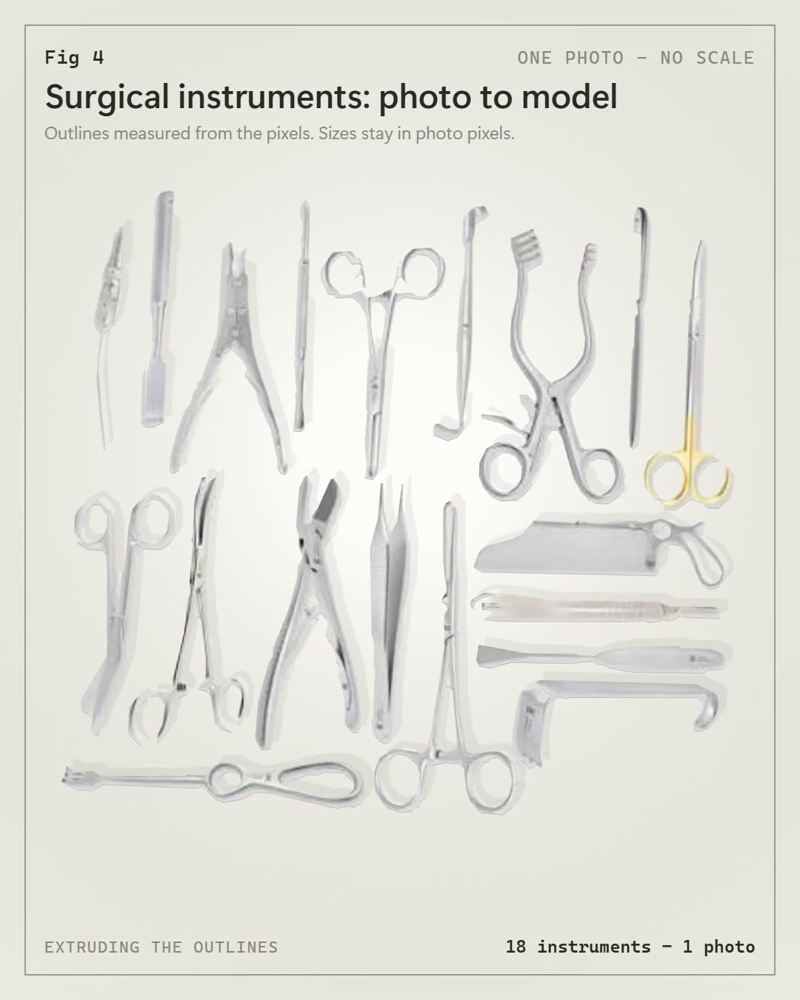
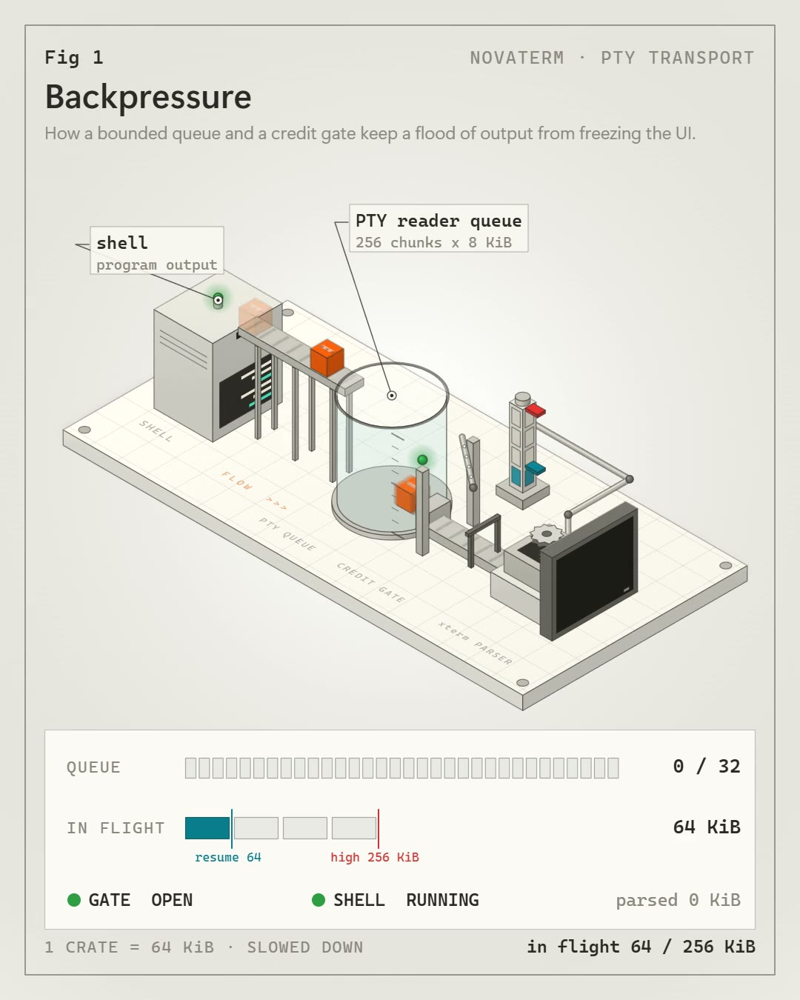

The same method, other subjects.
A circuit board from its datasheet drawing. A catalog photo with the limits stated. An idea turned into a working machine.
Galaxy S25 Ultra vs S26 Ultra
Five separate lens rings against one pill, titanium against aluminum, corners of 5.6 mm against 7 mm. Measured on the official renders; the interiors are estimated and dashed.
Open the viewer
Raspberry Pi 4 Model B
Every outline traced from the official datasheet drawing, pinout from its figure 3.
Open the viewer
Surgical instruments
One catalog photo becomes 3D plates. The film says what a single photo cannot give: millimetres.
Open the viewer
Backpressure
An idea from a repo, built as a machine that works: a queue, a gate, a credit return.
Open the figure